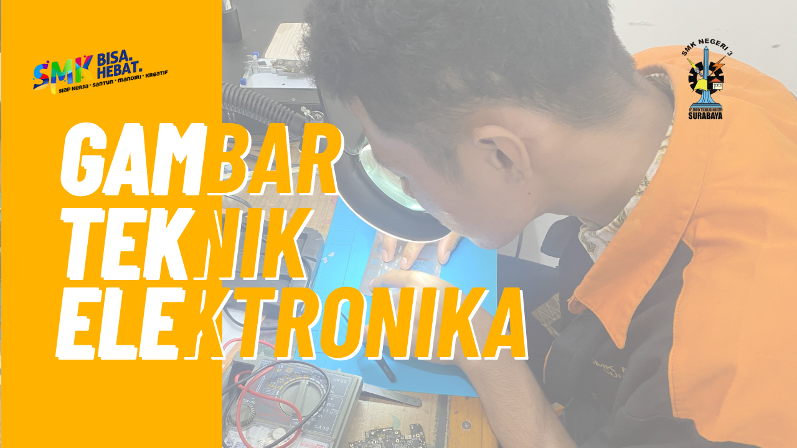
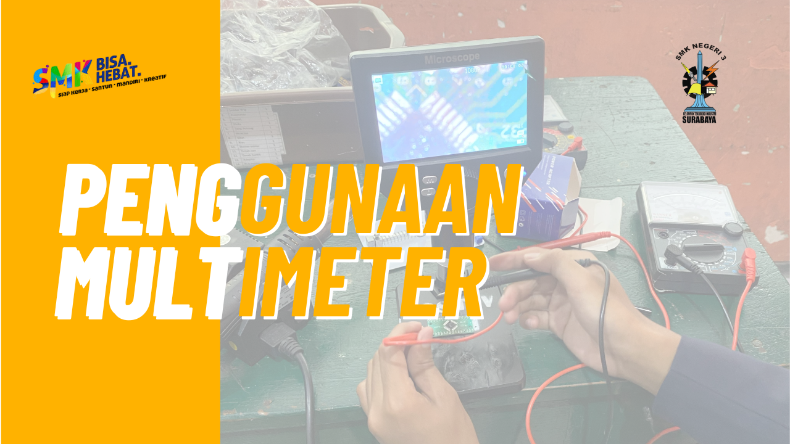
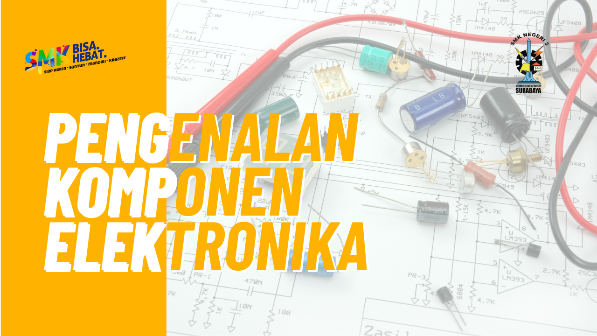
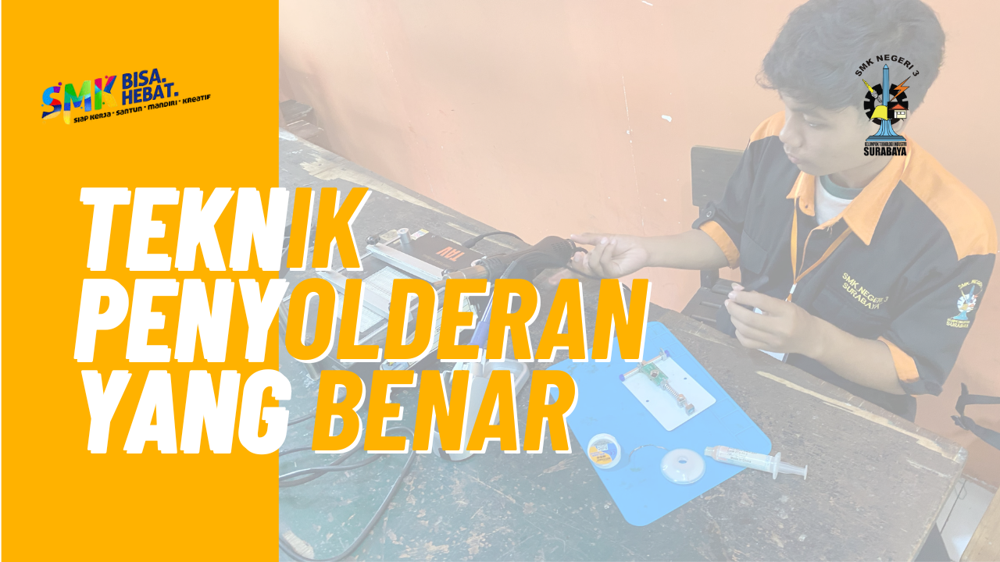
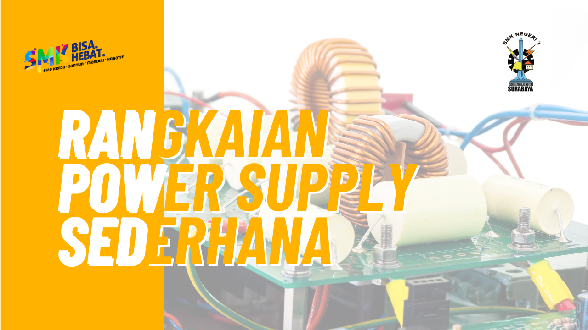
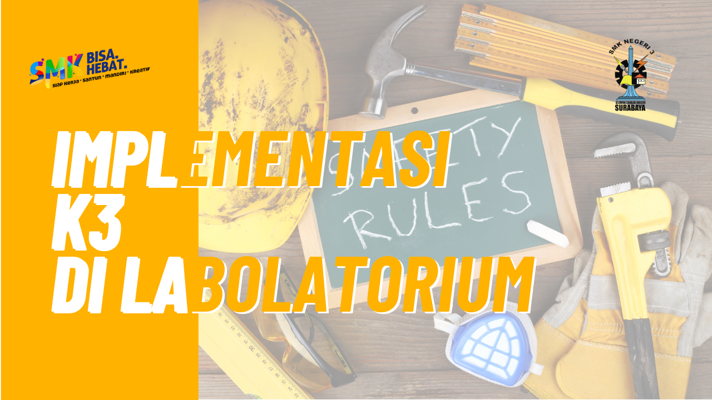

Berikut adalah koleksi video pembelajaran untuk membantu pemahaman materi:

Pengenalan simbol dan pembuatan skema rangkaian elektronika dasar.
🎥 Sumber: Direktorat SMK - Kemdikdasmen

Tutorial cara menggunakan multimeter untuk pengukuran tegangan, arus, dan resistansi.
🎥 Sumber: PraMana PRO Audio

Memahami berbagai jenis komponen elektronika aktif dan pasif.
🎥 Sumber: Asan Elektronika

Panduan langkah demi langkah untuk melakukan penyolderan komponen elektronika.
🎥 Sumber: CNC STORE BANDUNG

Tutorial pembuatan rangkaian power supply Sederhana
🎥 Sumber: Elektro Nad

Prosedur keselamatan dan kesehatan kerja yang harus diterapkan di laboratorium elektronika.
🎥 Sumber: elektronika smkduapati